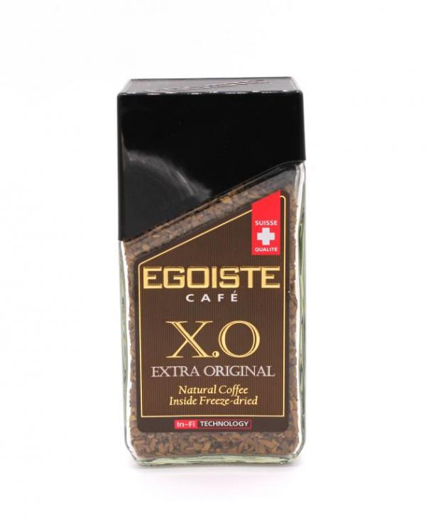

Топ продаж

Кофе растворимый Egoiste X.O. Extra Original (рейтинг 4.9) – продукт, созданный из смеси двух сортов кенийской арабики. Его производят по уникальной запатентованной технологии In-Fi. Сочетание сублимированного и молотого кофе дает насыщенный вкус только что сваренного напитка, при этом готовится он за несколько секунд. Компания использует тщательно отобранное сырье. Оно поставляется напрямую из Африки, Южной Америки и Индонезии. Процесс производства происходит на одном предприятии, что позволяет строго контролировать получаемый товар. Банки со стилизованными крышками выделяются среди других упаковок в магазине. Все вкусовые и ароматические свойства полностью сохраняются продолжительное время, благодаря максимальной герметичности. Кристаллы сублимированного кофе быстро растворяются в воде, натуральный молотый оставляет легкий осадок. Потребителям нравится интенсивный незабываемый вкус с орехово-шоколадными нюансами и яркий аромат с нотами какао и миндаля. Они отмечают полное отсутствие кислинки и искусственной горечи.